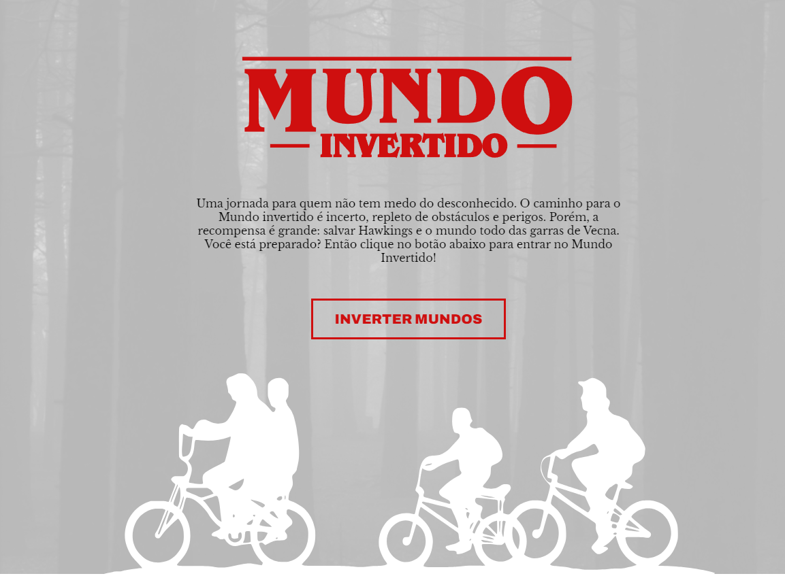
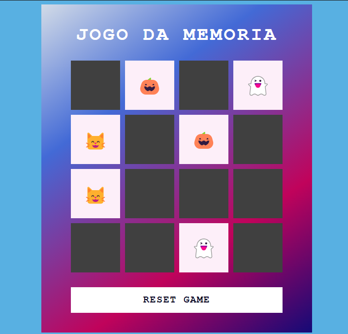
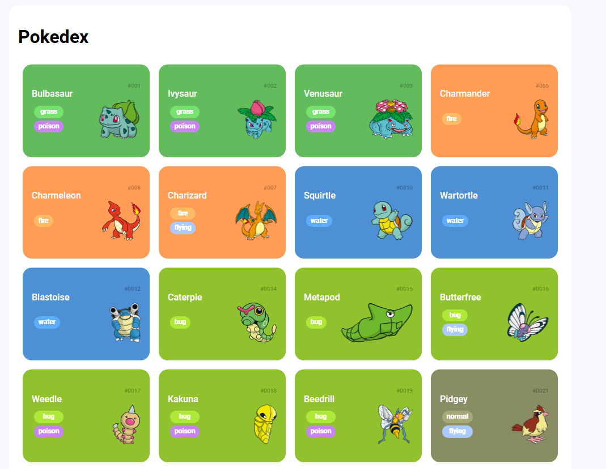

Meus projetos
Bem-vindo à minha galeria de projetos! Aqui você encontrará exemplos do meu trabalho como desenvolvedora, desde experimentos criativos até soluções práticas para problemas reais.

Landing page do mundo invertido Stranger Things. Tema branco e escuro. SAIBA MAIS

Jogo da memoria com emojis. SAIBA MAIS

Pokedex responsiva com integração da POKEDEX API. SAIBA MAIS